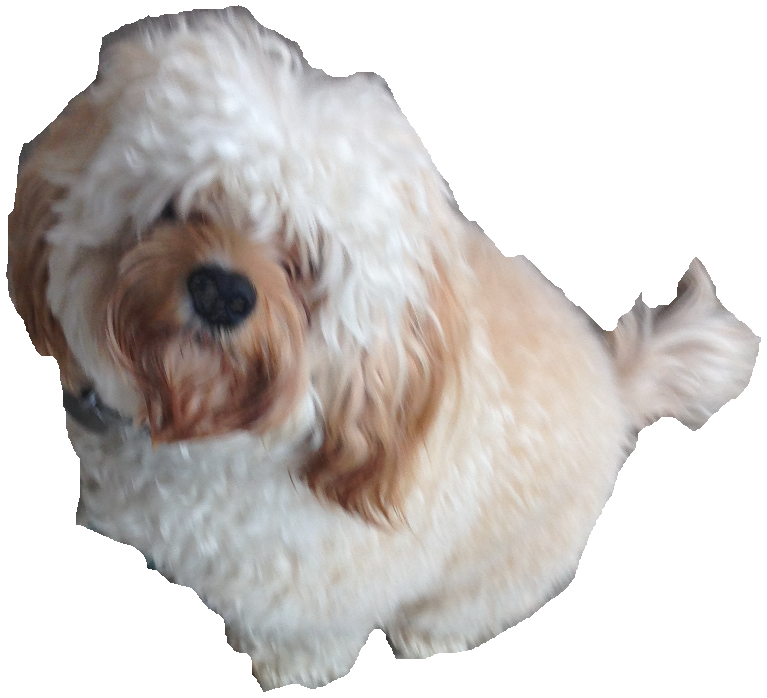

Bowser - The best pet on earth
 Bowsers highest speed of running is 10 miles per hour as an estimate. Right now, he is 17 in. tall. But beware...he is one of the most energetic things in the family.
Me - the person who made this webpage
My highest speed is 8 miles per hour. Right now, i'm 53 in. tall. But sadly, because I sit around on my computer a lot, i'm one of the most energetic people in this family.
Mom - The person that stays home to take care of me
Moms fastest speed estimated is 8 miles per hour. Right now, she says that her height is 66 in. tall. luckilly, she is one of the least energetic people in the family.
Pepper - The baby who is turning 2 years old in a month
Pepers highest speed estimated is 4 miles per hour. Since we couldn't keep Pepper still when measuring her, we estimated her height. The estimate was 32 in. tall. She doesn't really have much energy. She's mostly crazy.
Charlie - My very intelligent 6 year old sister
Charlies high speed estimated is 6 or 7 miles per hour. Right now, her hight is 47 in. tall. She is kind of energetic.